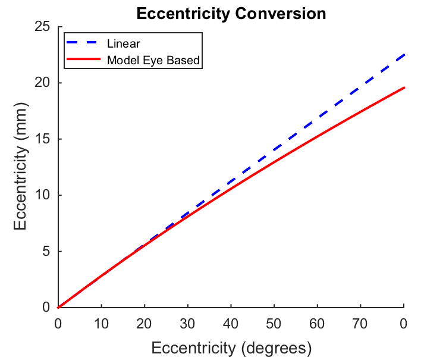
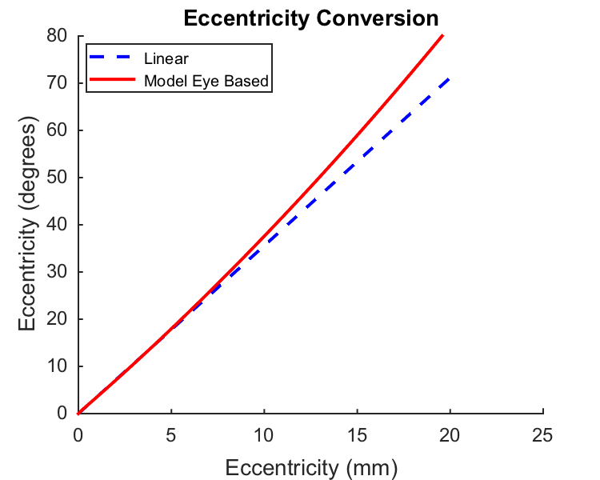

Contents
function varargout = cbOpticsImage_AngleToMm(varargin) % % Illustrates calculations converting degrees of visual angle to mm. % % Makes plots of eccentricity in mm versus eccentricity in degrees and the % other way around. % % The underlying routines are in the Psychophysics Toolbox. % % (c) David Brainard and Andrew Stockman, 2015 varargout = UnitTest.runValidationRun(@ValidationFunction, nargout, varargin); end
Function implementing the isetbio validation code
function ValidationFunction(runTimeParams)
Hello
UnitTest.validationRecord('SIMPLE_MESSAGE', sprintf('%s',mfilename)); outputDir = sprintf('%s_Output',mfilename); if (~exist(outputDir,'dir')) mkdir(outputDir); end
Set parameters
Can calculate with parameters set either for 'Human' or for 'Rhesus' eye.
species = 'Human'; switch (species) case 'Human' data.eyeLengthMm = EyeLength(species,'Rodieck'); case 'Rhesus' data.eyeLengthMm = EyeLength(species,'PerryCowey'); otherwise error('Unknown species specified'); end
Simple trigonometric calculation
degPerMm = DegreesToRetinalMM(1,data.eyeLengthMm); mmPerDeg = RetinalMMToDegrees(1,data.eyeLengthMm); fprintf('Computing for species %s\n',species); fprintf('\tMm per degree, linear approximation: %0.2f, assuming nodal point to retina of %0.1f mm\n',degPerMm,data.eyeLengthMm); fprintf('\tCorresponding degrees per mm: %0.1f\n',mmPerDeg); tolerance = 1e-6; UnitTest.assertIsZero(abs(degPerMm*mmPerDeg-1),'Linear calculation self-inversion check',tolerance);
Computing for species Human Mm per degree, linear approximation: 0.28, assuming nodal point to retina of 16.1 mm Corresponding degrees per mm: 3.6
Degrees to Mm calculations
upperLimitDegrees = 100; data.eccDegrees = linspace(0,upperLimitDegrees,100); data.eccMm = DegreesToRetinalEccentricityMM(data.eccDegrees,species,'DaceyPeterson'); data.eccMmLinear = DegreesToRetinalEccentricityMM(data.eccDegrees,species,'Linear',data.eyeLengthMm); data.eccDegreesCheck = RetinalEccentricityMMToDegrees(data.eccMm,species,'DaceyPeterson'); UnitTest.assertIsZero(abs(data.eccDegrees-data.eccDegreesCheck),'Conversion functions self-inversion check',tolerance);
Mm to degrees calculations
upperLimitMm = 20; data.eccMm1 = linspace(0,upperLimitMm,100); data.eccDegrees1 = RetinalEccentricityMMToDegrees(data.eccMm1,species,'DaceyPeterson'); data.eccDegreesLinear1 = RetinalEccentricityMMToDegrees(data.eccMm1,species,'Linear',data.eyeLengthMm); data.eccMmCheck1 = DegreesToRetinalEccentricityMM(data.eccDegrees1,species,'DaceyPeterson'); UnitTest.assertIsZero(abs(data.eccMm1-data.eccMmCheck1),'Conversion functions self-inversion check',tolerance); % This is the tangent calculation, which although it once seemed to me % a better approximation than the pure linear approximation turns out to % deviate more from the model eye based calculation. Not plotted but you % could be commenting out the corresponding lines in the plot code below. data.eccMmTangent = DegreesToRetinalMM(data.eccDegrees,data.eyeLengthMm,true); data.eccDegreesTangent1 = RetinalMMToDegrees(data.eccMm1,data.eyeLengthMm,true);
Drasdo and Fowler Figure 2
This is ellipsoid model data, digitized from their figure. It is not clear to me which curve (ellipsoid or sphere) Dacey and Peterson digitized and fit. First column is degrees, second is mm.
drasdoFowlerData = ...
[1.429393919263E0 4.001594366571E-1
3.492105671073E0 9.230850993158E-1
6.034234593326E0 1.662020859629E0
1.000354303683E1 2.739148342523E0
1.571668991785E1 4.215850660998E0
2.381363626298E1 6.400797183286E0
3.286388095396E1 8.862844615691E0
4.016364401337E1 1.073941407028E1
4.572178303328E1 1.227837640337E1
4.794503864125E1 1.289396133661E1
4.984831373591E1 1.335521158573E1
5.254323612126E1 1.396991961735E1
5.523705130760E1 1.455364379194E1
6.126021391085E1 1.590582608118E1
6.632675657123E1 1.688795588919E1
7.012555636750E1 1.759356938816E1
7.503155517173E1 1.848303992560E1
8.135698310414E1 1.949381518634E1
8.689076374588E1 2.035113266459E1
9.321065568325E1 2.120698864014E1
9.921278150535E1 2.197047764565E1];
Make a figure for the box
By uncommenting the plot line for the Drasdo and Fowler data you can see that the approximation provided by the fit is so-so, although the formula is much closer to the Drasdo and Fowler curve than the linear approximation. I don't think the juice is worth the squeeze as far as trying to do better with that figure, given individual differences and model eye differences. If one wanted to go down that road, probably starting with a ray trace of our best current model eye would be the place to start.
if (runTimeParams.generatePlots) [angleToMmFig,figParams] = cbFigInit; figParams.xLimLow = 0; figParams.xLimHigh = 80; figParams.xTicks = [0 10 20 30 40 50 60 70 80]; figParams.xTickLabels = {'^{ }0_{ }' '^{ }10_{ }' '^{ }20_{ }' '^{ }30_{ }' '^{ }40_{ }' '^{ }50_{ }' ... '^{ }60_{ }' '^{ }70_{ }' }; figParams.yLimLow = 0; figParams.yLimHigh = 25; figParams.yTicks = [0 5 10 15 20 25]; figParams.yTickLabels = {' 0 ' ' 5 ' ' 10 ' ' 15 ' ' 20 ' ' 25 '}; plot(data.eccDegrees,data.eccMmLinear,'b--','LineWidth',figParams.lineWidth); plot(data.eccDegrees,data.eccMm,'r','LineWidth',figParams.lineWidth); % plot(data.eccDegrees,data.eccMmTangent,'g','LineWidth',figParams.lineWidth); % plot(drasdoFowlerData(:,1),drasdoFowlerData(:,2),'k--','LineWidth',figParams.lineWidth-1); xlabel('Eccentricity (degrees)','FontSize',figParams.labelFontSize); ylabel('Eccentricity (mm)','FontSize',figParams.labelFontSize); title('Eccentricity Conversion','FontSize',figParams.titleFontSize); cbFigAxisSet(angleToMmFig,figParams); % Legend, with tweak to make lines long enough so that dash shows. % Note the extra spaces that preface the actual legend text. Ugh. [~,legendChildObjs] = legend({['^{ }' figParams.legendExtraSpaceStr ' Linear '],[ '^{ }' figParams.legendExtraSpaceStr ' Model Eye Based ']},... 'Location','NorthWest','FontSize',figParams.legendFontSize); lineObjs = findobj(legendChildObjs, 'Type', 'line'); xCoords = get(lineObjs, 'XData') ; for lineIdx = 1:length(xCoords) if (length(xCoords{lineIdx}) ~= 2), continue; end set(lineObjs(lineIdx), 'XData', xCoords{lineIdx} + [0 figParams.legendLineTweak]) end FigureSave(fullfile(outputDir,[mfilename '_ConvertAngleToMm']),angleToMmFig,figParams.figType); end
Can also make the inverse figure.
if (runTimeParams.generatePlots) [mmToAngleFig,figParams] = cbFigInit; figParams.xLimLow = 0; figParams.xLimHigh = 25; figParams.xTicks = [0 5 10 15 20 25]; figParams.xTickLabels = {'^{ }0_{ }' '^{ }5_{ }' '^{ }10_{ }' '^{ }15_{ }' '^{ }20_{ }' '^{ }25_{ }'}; figParams.yLimLow = 0; figParams.yLimHigh = 80; figParams.yTicks = [0 10 20 30 40 50 60 70 80]; figParams.yTickLabels = {' 0 ' ' 10 ' ' 20 ' ' 30 ' ' 40 ' ' 50 ' ' 60 ' ' 70 ' ' 80 '}; plot(data.eccMm1,data.eccDegreesLinear1,'b--','LineWidth',figParams.lineWidth); plot(data.eccMm1,data.eccDegrees1,'r','LineWidth',figParams.lineWidth); % plot(data.eccMm1,data.eccDegreesTangent1,'g','LineWidth',figParams.lineWidth); xlabel('Eccentricity (mm)','FontSize',figParams.labelFontSize); ylabel('Eccentricity (degrees)','FontSize',figParams.labelFontSize); title('Eccentricity Conversion','FontSize',figParams.titleFontSize); cbFigAxisSet(mmToAngleFig,figParams); % Legend, with tweak to make lines long enough so that dash shows. % Note the extra spaces that preface the actual legend text. Ugh. [~,legendChildObjs] = legend({['^{ }' figParams.legendExtraSpaceStr ' Linear '],[ '^{ }' figParams.legendExtraSpaceStr ' Model Eye Based ']},... 'Location','NorthWest','FontSize',figParams.legendFontSize); lineObjs = findobj(legendChildObjs, 'Type', 'line'); xCoords = get(lineObjs, 'XData') ; for lineIdx = 1:length(xCoords) if (length(xCoords{lineIdx}) ~= 2), continue; end set(lineObjs(lineIdx), 'XData', xCoords{lineIdx} + [0 figParams.legendLineTweak]) end FigureSave(fullfile(outputDir,[mfilename '_ConvertMmToAngle']),mmToAngleFig,figParams.figType); end
Save validation data
UnitTest.validationData('validateDataStruct', data);
end